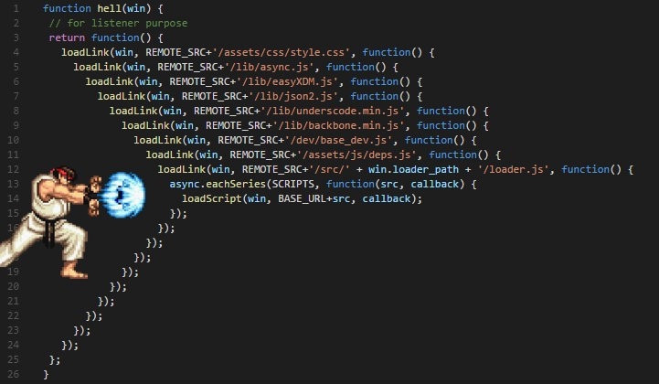
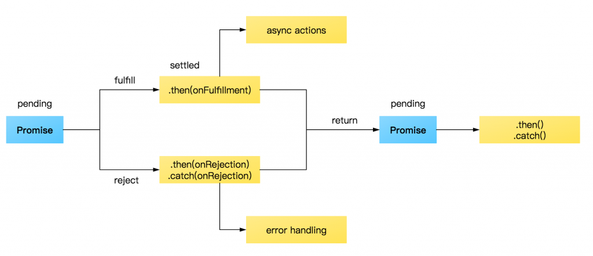

JavaScript 同步與非同步
synchronous 和 asynchronous 如果將其翻譯成中文的 “同步” 與 “非同步” 反而很容易誤解其含義，同步 synchronous 指的是 one at a time，一次執行一列程式碼並依序執行，非同步 asynchronous 指的是 more than one at a time，同時執行不只一列程式碼
同步與非同步簡介
JavaScript 執行的方式 “同步” synchronous 的，也就是從上到下一次執行一列程式碼並依序執行，但 JavaScript 是一個 “非同步” asynchronous 的語言，因為其含有許多非同步的事件，避免因為其中一列程式碼卡住就影響其他程式碼和渲染
堆疊 stack 與 佇列 queue
JavaScript 是一個單線程 single threaded 的程式語言，所有程式碼都會依序在堆疊 stack 中執行，而且一次只會執行一列程式碼
堆疊 stack
堆疊 stack 是 “後進先出” 的方式，在 JavaScript 中會記錄當下執行到哪段程式碼，如果進入一個函式，就會將該函式放到堆疊的最上方，在執行到 return 或結尾時將該函式從堆疊最上方抽離
佇列 queue
佇列 queue 是先進先出的方式，也是 javascript 能進行非同步的關鍵，所有的 “事件”、Http request 都會依照觸發順序被加入到 “佇列” queue 中，等到 “堆疊” stack 內是空的時，就會將佇列中的第一個物件加入到堆疊中開始依序執行
JavaScript 執行非同步事件 asynchronous callback
- 首先建立了一個函式
waitThreeSeconds，這個函式透過while來延遲 3 秒出現finished function字串 - 接著添加了一個事件監聽器
EventListener，當點擊滑鼠時會出現click event字串 - 在程式執行的一開始我們就透過點擊來觸發事件
- 結果是
started execution最先出現 - 3 秒後出現接著
finished function 和 finished execution - 最後才是我們點擊所觸發的
click event
1 | function waitThreeSeconds(){ |
從以上範例可以驗證 JavaScript 中會先依序執行完堆疊 stack 中的程式碼，才會執行 queue 中的點擊事件
Promise
callback hell
當有一個以上的非同步事件，我們希望他們是透過安排好的順序依序執行時，最直覺的做法就是在事件執行完後 callback 下一個事件
1 | function a(){ |
看似沒有什麼問題，但是當使用大量的非同步事件又希望依照固定的順序執行時，就會出現以下經典圖，callback hell

Promise
為了解決以上同步與非同步的問題，ES6 開始新增了 promise 物件
promise 顧名思義是承諾、約定的意思，其內函式的兩個參數分別為 resolve 傳遞成功訊息，reject 傳遞失敗訊息，以下為 promise 的三種狀態
pending: 一進入 promise 的初始等待狀態fulfilled: 表示操作成功的狀態rejected: 表示操作失敗的狀態
以下圖片表示整個 promise 流程

如果要解決上方的 callback hell ，可以使用 then() 來串接多個非同步事件
1 | function a(){ |
除此之外，then() 可以用來接收成功的訊息，catch() 可以用來接收失敗的訊息
1 | let onePiece = (name) => { |
Promise.all()
Promise.all() 會 “同時執行” 以下的 pormise，並在完成後統一回傳陣列，這個陣列內容就是 promise 的 resolve 結果，但如果 all() 其中有任何一個事件 reject，那麼整個 promise 就會被視為 reject
1 | Promise.all([onePiece('跑得快'), onePiece('電話蟲')]).then((data) => { |
Promise.race()
而 Promise.race() 僅會回傳第一個完成的結果
1 | Promise.race([onePiece('跑得快'), onePiece('電話蟲')]).then((data) => { |
asyne 與 await
asyne 與 await 的配合也可以和 promise 達到相同的效果，在一個函式執行完後才會接著執行下一個
async 非同步
async 又稱為非同步函式，用來包住 await，其用法類似 Promise，也可以在後方加上 then() 和 catch() 分別接收 resolve 和 reject 的結果
await 等待
使用 await 會將後面的函式卡住，直到這個函式完成才會執行下一個函式
1 | let onePiece = (name, timer, success = true) => { |
同樣的，如果其中有函式執行失敗 reject，就會執行失敗結果
1 | const relay = async () => { |
參考資料
談談JavaScript中的asynchronous和event queue
同步與非同步
使用 Promise 處理非同步
用 JavaScript 學習資料結構和演算法：堆疊（Stack）篇